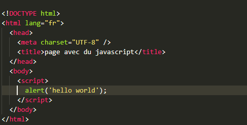
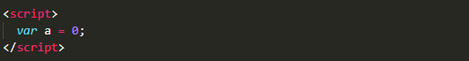
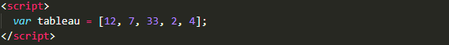
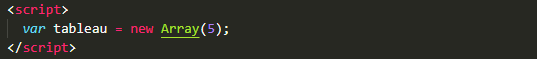

Maintenant que nous savons créer des pages web avec HTML et les mettre en forme avec CSS, il s’agit maintenant de pouvoir interagir avec les interventions de l’utilisateur. Pour passer au web dynamique, d’autres langages sont nécessaires dont JAVASCRIPT fait partie.
Pour intégrer du code javascript à un fichier HTML, il suffit de l’encapsuler entre les balises <script>...</script>. Cette balise peut être positionnée à n’importe quel endroit de la page HTML mais il est d’usage de placer le code javascript juste avant la balise </body>.
Il de tradition de commencer l’apprentissage d’un langage en faisant afficher la phrase "hello world". Nous allons suivre ici cette tradition. Le code minimal à saisir est :

On retiendra que chaque instruction Javascript doit être suivie d’un point-virgule. L’instruction alert permet d’afficher un texte, saisi entre 2 guillemets, dans une boîte de dialogue. Enregistrer et tester le code ci- dessus.
Pour programmer en javascript, tout commence par l’utilisation de variables, chose la plus importante en informatique. Pour déclarer une variable on utilise le mot-clé var. Par exemple, pour déclarer une variable a et l’initialiser à 0, on saisit :

Javascript sait gérer plusieurs sortes de nombres (entiers, décimaux, …). Par défaut ils sont regroupés dans le type number. Pour faire des calculs sur 2 variables n1 et n2 de ce type, on utilise les opérateurs courants de la façon suivante :
| Opération | Symbole | Exemple |
| addition | + | var n = n1 + n2 ; |
| soustraction | - | var n = n1 - n2 ; |
| multiplication | * | var n = n1 * n2 ; |
| division | / | var n = n1 / n2 ; |
|
reste (modulo) |
% | var n = n1 % n2 ; |
| puissance | Math.pow(nombre,exposant) | var n = Math.pow(n1,3) ; |
| racine carrée | Math.sqrt(nombre) | var n = Math.sqrt(n1) ; |
Un tableau permet de stocker de nombreuses informations, de façon indexée. Par exemple, pour stocker le tableau suivant dans une variable (que l’on peut nommer tableau).
| 12 | 7 | 33 | 2 | 4 |
On utilise le code :

ATTENTION : le tableau est alors indexé de 0 à 4. Ce qui signifie que la variable tableau[0] contient la valeur 12, la variable tableau[1] contient la valeur 7, …, la variable tableau[4] contient la valeur 4.
On peut aussi créer un tableau de 5 cases vides avec le code :
